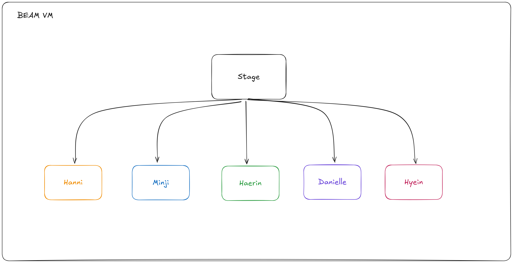
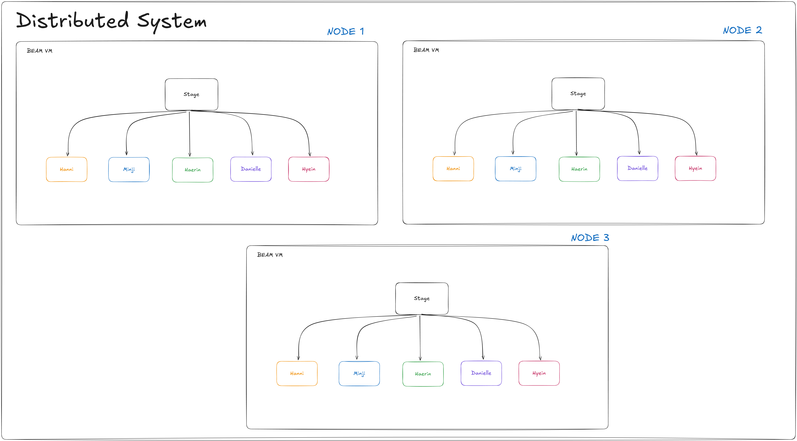
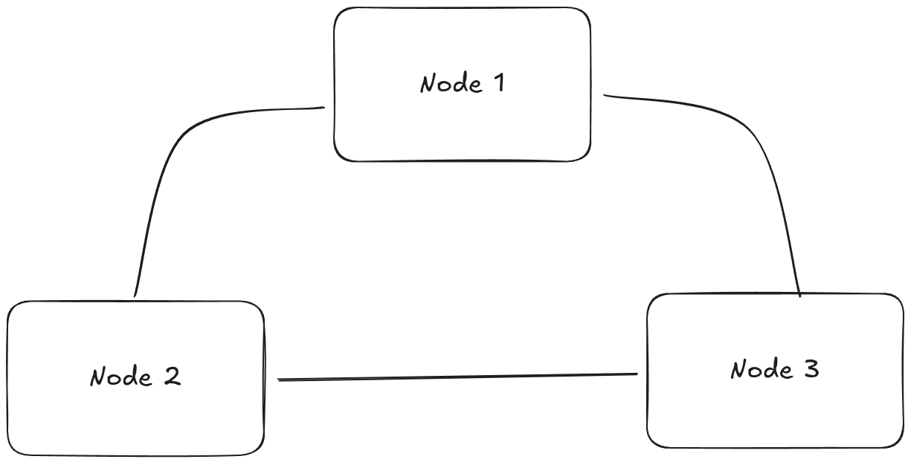

Distributed System
"The BEAM way"
What is a Distributed System?
“A distributed system is just many computers pretending to be one big computer.”
The Single Machine Problem
Single Point
of Failure
1 crash = game over
Can't Scale
Limited CPU/RAM
Geography
Far users = slow
Why Go Distributed?
Fault Tolerance
Node dies? Others continue!
Horizontal Scale
Add nodes = more power
Low Latency
Nodes close to users
Distributed Concepts in Real Life 🌍
Discord
Pub/Sub
Message → broadcast
to all listeners
Google Docs
CRDTs
Conflict-free
data merge
Grab/Uber
Consistency
1 driver can't accept
2 rides at once
The Erlang Legacy
- 1980s at Ericsson
- Built for telecom: needed to handle millions of calls, never crash!
- Superpowers: Concurrency, Fault tolerance, Distribution

José Valim
Creator of Elixir, former Rails core team
"I loved Ruby, but I needed better concurrency and distribution.
I found everything I wanted in the Erlang VM."
Why BEAM is Cool? ✨
Lightweight
Millions of processes
Message Passing
No shared memory
Let It Crash
Supervisors restart
Built-in DistNode.connect/1
Why BEAM Excels at Distribution 🚀
Built-in Clustering
Nodes connect with
one line of code
Location Transparency
Send message to process
local or remote = same!
Failure Detection
Node dies?
Others know instantly
Why are distributed systems hard? 🤯
- Unreliable networks 🌐
- Some parts can fail 💥
- Keeping data in sync 🔄
- Conflicting changes ⚔️
- Slow coordination 🐢
- Hard to debug 🐞
Why Elixir Makes Distributed Easy? 🎯
Because you already learned it!
✅ Process = isolated unit → Node = isolated unit
✅ Message passing → same across nodes
✅ Supervisor restart → works for remote too
✅ Let it crash → let the node crash
Newjeans Stage
Newjeans State in Distributed System
⚡ Basic Distributed System in Elixir
- Start nodes:
iex --sname node1 -S mix - Connect nodes:
Node.connect(:'node2@host') - Check nodes:
Node.list() - Run remote call:
Node.spawn(:'node2@host', fn -> IO.puts("Hi") end) - Share state: use
:global/:pg/ libraries (e.g., DeltaCrdt)
Distributed Counter 3 Node
3 Nodes Counting Together
🏪 3 shops in different cities
📊 Each shop counts its own sales
📵 Sometimes internet goes down
🔄 When online → sync & merge
This is how G-Counter CRDT works!
What is G-Counter (CRDT)?
Each node keeps its own counter, then we merge them!
Node1
{node1: 2, node2: 0, node3: 0}
Node2
{node1: 0, node2: 3, node3: 0}
Node3
{node1: 0, node2: 0, node3: 1}
⬇️ Merge = take max of each ⬇️
{node1: 2, node2: 3, node3: 1} → Total = 6
Increament Counter (Sync)
Increament Counter (Offline)
Demo


Summary
“Erlang/Elixir makes distributed systems... simple.” 🦸♂️💥